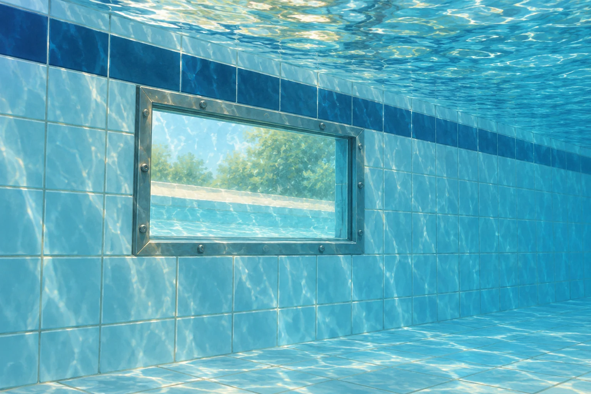

Zusatzaufgaben · Physik
Fermi-Aufgaben · Druck, Auftrieb und Strömung
Wählt eine Aufgabe und entwickelt euren eigenen Lösungsweg.
Aufgabe 10 · Klasse 8/9
Wie viel Wasser steckt im Biggesee?
Der Biggesee ist ein großer Stausee im Sauerland. Wie viele Tonnen Wasser enthält er ungefähr bei einem üblichen Wasserstand?

Aufgabe 11 · Klasse 9
Wie stark drückt Wasser auf eine Schwimmbadwand?
In einer Schwimmbadwand befindet sich ein 40 cm breites und 30 cm hohes Sichtfenster. Seine Mitte liegt 1,5 m unter der Wasseroberfläche; dahinter ist Luft bei normalem Umgebungsdruck. Mit welcher zusätzlichen Kraft drückt das Wasser ungefähr auf das Fenster?